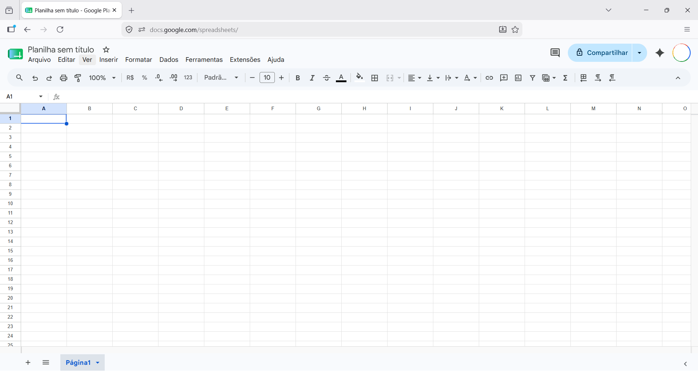
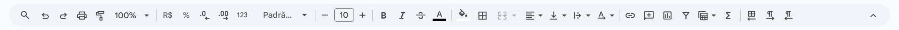
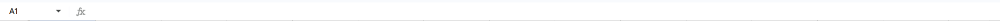
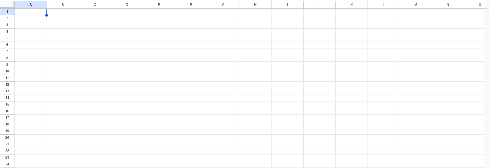
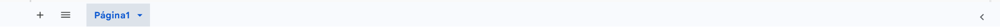

Conhecendo a interface do Google Planilhas
Você selecionou o Google Planilhas. Como ele funciona diretamente no seu navegador de internet, sua interface é mais limpa, mas possui todas as ferramentas essenciais organizadas em barras de fácil acesso.
Veja abaixo a interface padrão do Google Planilhas assim que abrimos um arquivo novo:

A partir da imagem acima, vamos compreender a função de cada uma das suas partes principais:
-
Barra de Menus: Fica logo abaixo do título do arquivo (Arquivo, Editar, Ver, Inserir, Formatar...). Ao clicar em qualquer uma dessas palavras, um menu em lista se abre para baixo, mostrando as opções disponíveis.
-
Barra de Atalhos ou Barra de Ferramentas: É a linha cheia de ícones logo abaixo dos menus. Ela traz botões rápidos para as funções que mais usamos no dia a dia, como desfazer, imprimir, formatar como moeda, mudar a cor do texto e aplicar bordas.

-
Barra de Fórmulas: É o espaço em branco comprido que fica ao lado da Caixa de Nome. Quando você clica em uma célula que possui um cálculo ou uma palavra, é aqui que o Google Planilhas te mostra o que foi digitado de verdade ali dentro.

-
Área de Trabalho da Planilha: O corpo central da tela. Uma grande malha quadriculada onde as colunas são organizadas por letras (A, B, C...) e as linhas por números (1, 2, 3...). É aqui que a mágica acontece e onde montamos nossas tabelas.

-
Guias de Planilhas: Ficam no canto inferior esquerdo do navegador. Permitem que você crie várias páginas diferentes dentro de um mesmo arquivo de planilha, clicando no botão de mais (+).
